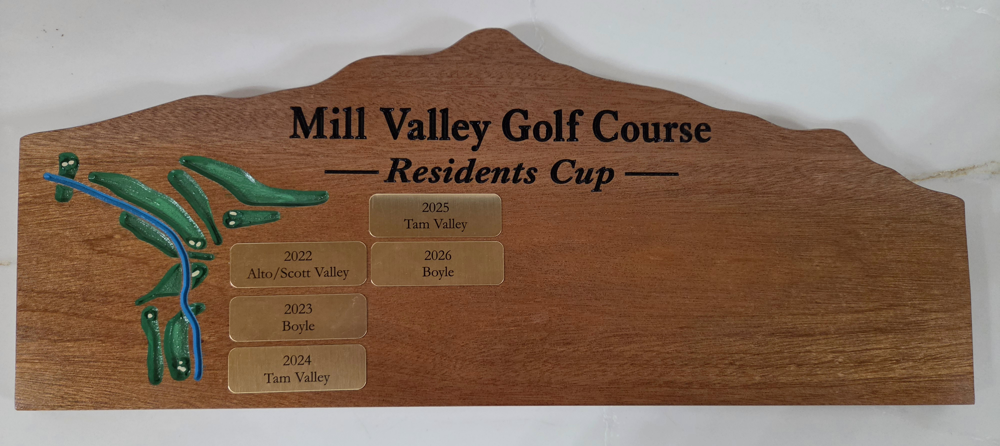
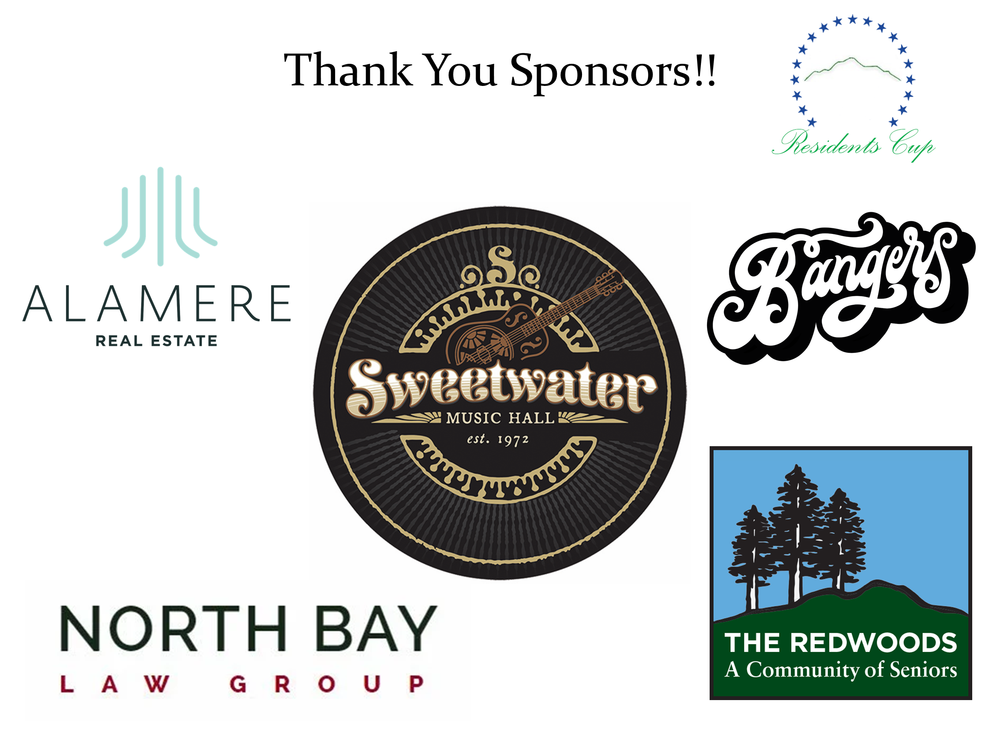
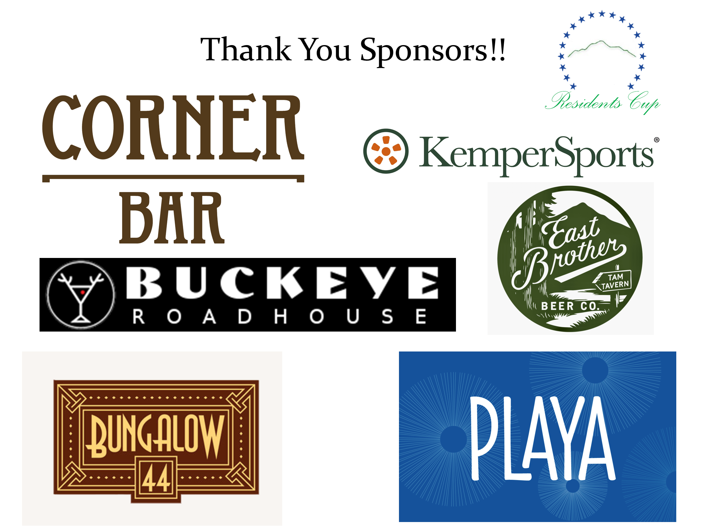

Thank you to everyone who participated in, sponsored, and supported this year's Mill Valley Residents Cup.
We look forward to seeing everyone again on Saturday, October 2, 2027.
The Mill Valley Residents Cup is an annual community golf tournament and fundraiser supporting Friends of Mill Valley Golf Course. Held each fall, the event brings together neighbors and local players for a fun, competitive day representing their neighborhoods.
The 2026 Residents Cup took place on Saturday, October 3. Players competed in a nine-hole, two-person scramble to determine the winning neighborhood.
Thank you to all the players, sponsors, volunteers, and supporters who helped make this year's tournament a success.
Each year, the winning neighborhood earns its place on the perpetual Mill Valley Residents Cup trophy, celebrating the history of this growing community tradition.

We are grateful to our sponsors for supporting the Residents Cup and the Mill Valley Golf Course community.


The next Mill Valley Residents Cup is planned for Saturday, October 2, 2027. Check back for future event details and registration information.